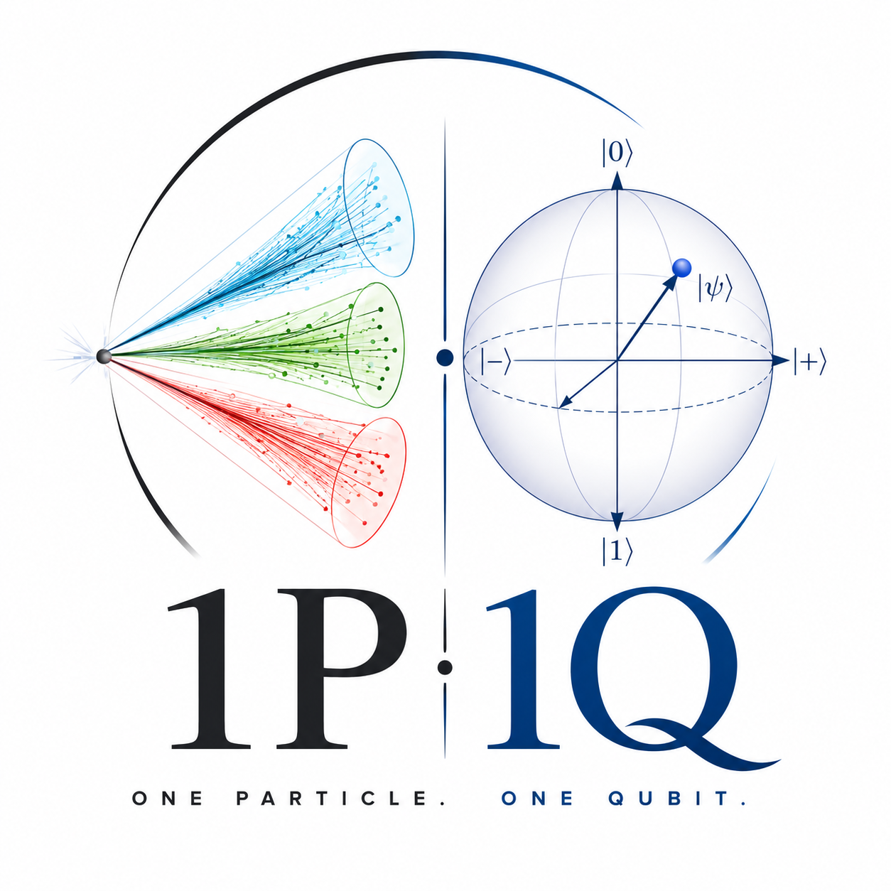
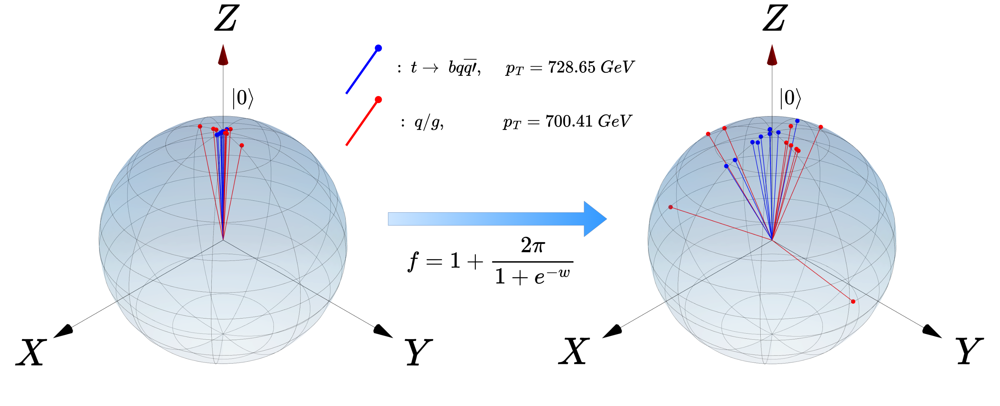
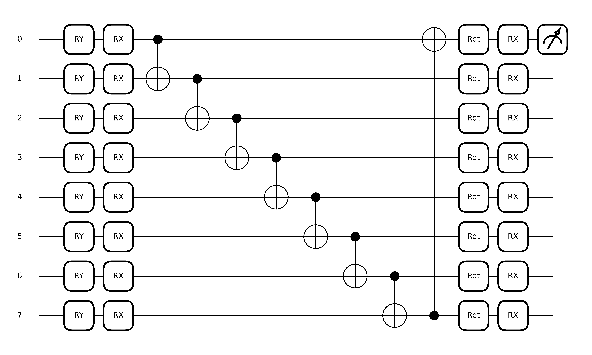
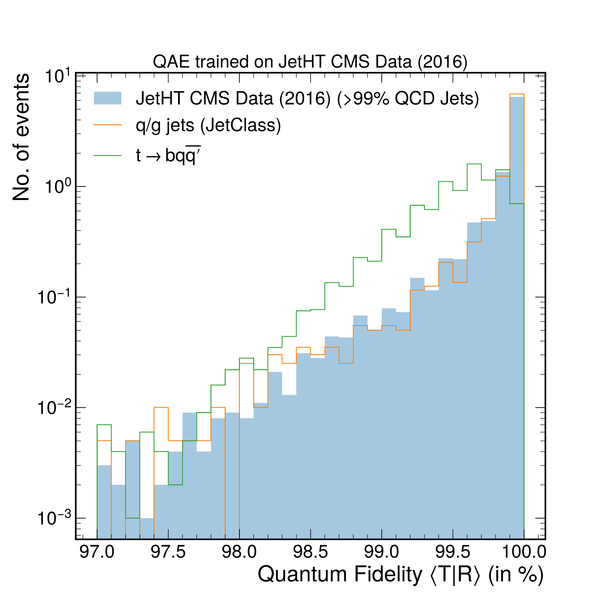
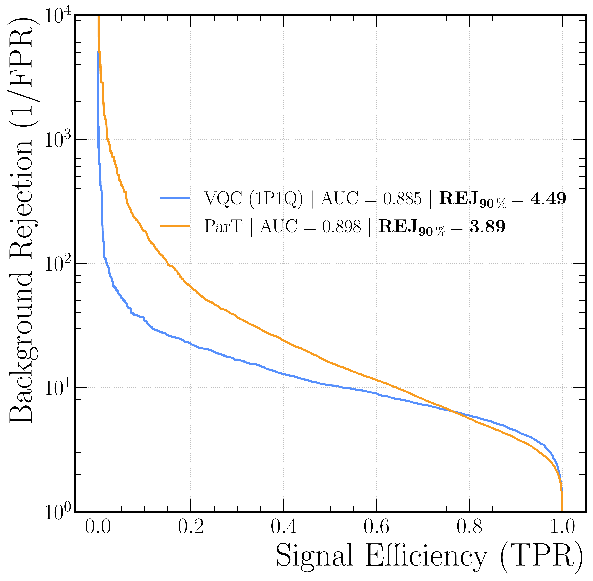

One Particle – One Qubit: Particle Physics Data Encoding for Quantum Machine Learning
3Institute for Particle Physics Phenomenology (IPPP), Durham University, Durham, UK
Physical Review D 112, 076004 (2025) · Correspondence: aritra.bal@kit.edu
Abstract
We introduce 1P1Q (1 Particle – 1 Qubit), a novel quantum data encoding scheme for high-energy physics (HEP), where each reconstructed particle is assigned to an individual qubit. This allows collision events to be represented directly on quantum circuits without prior classical compression, preserving the full kinematic information of each jet constituent as a quantum state.
We demonstrate the effectiveness of 1P1Q through two quantum machine learning (QML) applications: a Quantum Autoencoder (QAE) for unsupervised anomaly detection, and a Variational Quantum Circuit (VQC) for supervised classification of top-quark jets. The QAE successfully distinguishes signal jets from background QCD jets, outperforming a classical autoencoder despite using only \(31\) trainable parameters versus \({\sim}2500\). The VQC achieves an AUC of \(0.885\) versus \(0.898\) for the state-of-the-art Particle Transformer, with just \(32\) parameters against over two million, and surpasses it in background rejection at signal efficiencies above \(80\%\). Furthermore, for the first time, we validate a QML model trained on real experimental data from the CMS detector, establishing the robustness of 1P1Q in practical HEP applications.
The 1P1Q Encoding
In collider measurements, each reconstructed particle is fully characterised by three kinematic quantities: the transverse momentum \(p_\text{T} = \sqrt{p_x^2 + p_y^2}\), the pseudorapidity \(\eta = -\ln\tan(\nu/2)\), and the azimuthal angle \(\phi\). The 1P1Q scheme maps these three variables directly onto a single qubit by identifying them with spherical coordinates on the Bloch sphere, establishing a lossless, geometry-preserving bridge between particle kinematics and quantum state space.
Bloch Sphere Mapping
The pseudorapidity and azimuthal angle of particle \(k\), modulated by its relative transverse momentum and a trainable sigmoid scale factor \(f\), define the polar and azimuthal rotation angles:
The quantum state of the qubit encoding particle \(k\) is then:
The scale factor \(f\) is a trainable sigmoid function of a single learnable weight \(w\):
which constrains \(f \in [1,\, 2\pi+1]\) and ensures the encoded states spread across the Bloch sphere rather than clustering near the north pole. The coordinates \(\eta\) and \(\phi\) are taken relative to the jet axis, making the encoding independent of the overall energy scale of the collision event. Figure 1 illustrates the effect of this scaling for the ten hardest particles in a top-quark jet and a QCD light-quark jet.

Figure 1: Bloch sphere representation of the 1P1Q encoding applied to the ten hardest particles of a top-quark jet (\(t \to b q\bar{q}'\), red) and a QCD light-flavor jet (blue) at comparable jet \(p_\text{T} \approx 714\,\text{GeV}\). Left: before applying the trainable scale factor (\(f = 1\)); right: after training, where \(w\) converges to \(f = 7.268\), spreading the encoded states across the full sphere and improving discriminative power.
Quantum Autoencoder (QAE) for Anomaly Detection
The QAE compresses the \(N\)-qubit encoded state into a smaller latent representation by replacing \(N_\text{trash}\) qubits with \(N_\text{ref} = N_\text{trash}\) reference qubits initialised to \(|0\rangle\), creating an information bottleneck. The unitary transformation applied to the full register is:
where the \(C_{ij}\) are CNOT gates acting on all distinct qubit pairs, introducing non-linear inter-particle correlations. The QAE requires only \(3N + 1\) trainable parameters for an \(N\)-particle jet. It is trained to maximise the fidelity between the trash and reference subspaces on background QCD events:
Signal jets (anomalies) yield systematically lower fidelity, providing a threshold-free anomaly score without requiring signal labels during training.
Variational Quantum Circuit (VQC) for Classification
For supervised classification, a VQC uses the same 1P1Q encoding followed by nearest-neighbor CNOT entanglement and three trainable rotations per qubit:
The classifier output is the expectation value of \(Z\) on the first qubit plus a trainable bias:
The VQC requires only \(3N + 2\) trainable parameters (the extra term being the bias \(b\)), and is optimised with the mean-squared error loss against the binary jet-class label. Despite its extreme parameter economy, it achieves classification performance competitive with billion-parameter-era state-of-the-art classical models.

Figure 2a: Quantum Autoencoder (QAE) circuit for anomaly detection, shown for a 4-particle input. Encoding layers (\(R_Y\), \(R_X\)) are followed by all-to-all CNOT entanglement, trainable rotations (Rot), and a SWAP test with an ancillary qubit to measure fidelity against the \(|0\rangle\) reference.

Figure 2b: Variational Quantum Circuit (VQC) for supervised classification, shown for an 8-particle input. Nearest-neighbor CNOT entanglement replaces all-to-all coupling, and the final measurement is a Pauli \(Z\) expectation on qubit 0.
Results
Anomaly Detection with the QAE
The QAE is trained on background QCD jets from the JetClass dataset and on real CMS JetHT data recorded in 2016 (>99% QCD jets). Figure 3 shows the quantum fidelity \(\langle T|R\rangle\) distributions for the CMS-trained model: signal jets (top-quark decays) produce systematically lower fidelity than background, confirming that the 1P1Q-encoded QAE extracts physically meaningful substructure information even from raw experimental data, without access to high-level features. To the best of our knowledge, this is the first demonstration of a QML model trained on real collider data, validating the practical applicability of 1P1Q in experimental HEP contexts.

Figure 3: Quantum fidelity \(\langle T|R\rangle\) distributions for a 10-qubit QAE with a 2-qubit latent space, trained on real CMS JetHT 2016 data (blue shaded). Orange: simulated QCD jets (JetClass); green: top-quark signal \(t \to b q\bar{q}'\). Signal jets accumulate at lower fidelity values, providing a clean anomaly score without signal supervision.
Table 1 quantifies the AUC performance of the 1P1Q QAE against a classical autoencoder (CAE) on the same 10-particle input. The CAE is substantially larger: its encoder has an input vector of size \(30\), followed by dense layers of sizes \(20\text{-}16\text{-}12\) and a latent space of dimension \(6\), giving \({\sim}2500\) trainable parameters. The QAE requires only \(31\) parameters yet outperforms the CAE across all three signal types.
| Algorithm | \(W \to q\bar{q}'\) | \(H \to b\bar{b}\) | \(t \to bq\bar{q}'\) |
|---|---|---|---|
| QAE (1P1Q) | 0.715 | 0.774 | 0.872 |
| CAE (classical) | 0.671 | 0.739 | 0.858 |
Table 1: AUC scores for the 1P1Q QAE vs. classical autoencoder (CAE), trained on a 10-particle input space. QAE rows shaded. The QAE uses \(31\) parameters; the CAE uses \({\sim}2500\).
Supervised Classification: VQC vs. Particle Transformer
For top-quark jet tagging (\(t \to bq\bar{q}'\) vs. QCD), both the VQC and the Particle Transformer (ParT) are trained on \(1000\) jets using the ten hardest jet constituents. The VQC achieves an AUC of \(0.885\) with only \(32\) trainable parameters. ParT achieves AUC \(= 0.898\) with over 2 million parameters. We observe that the VQC yields superior background rejection at signal efficiencies above \(80\%\), suggesting that the quantum geometry of the 1P1Q state representation captures complementary information to the classical attention mechanism.

Figure 4: Receiver Operating Characteristic (ROC) curves for the VQC trained with 1P1Q encoding (AUC \(= 0.885\), \(\text{REJ}_{90\%} = 4.49\)) and the Particle Transformer (AUC \(= 0.898\), \(\text{REJ}_{90\%} = 3.89\)), both trained on the same 1000-jet sample with 10 particles per jet. Background rejection \(1/\epsilon_B\) is shown on a logarithmic scale.
Feature Ablation of the 1P1Q Encoding
To assess which kinematic variables drive performance, features encoded per qubit are removed one at a time. Table 2 shows AUC scores for the benchmark signal \(t \to bq\bar{q}'\). All three variables are necessary; removing \(p_\text{T}\) causes the largest drop, emphasising the importance of momentum-weighted angular correlations in jet substructure analysis.
| Algorithm | \((p_\text{T},\,\eta,\,\phi)\) | \((p_\text{T},\,\eta)\) | \((\eta,\,\phi)\) | \((p_\text{T},\,\phi)\) |
|---|---|---|---|---|
| VQC | 0.886 | 0.856 | 0.808 | 0.857 |
| QAE | 0.872 | 0.825 | 0.823 | 0.827 |
Table 2: AUC scores vs. input feature combinations for signal \(t \to bq\bar{q}'\). Including all three kinematic variables consistently gives the best performance. Removing \(p_\text{T}\) causes the largest degradation for both models.
BibTeX
@article{Bal:2025jyw,
author = {Bal, Aritra and Klute, Markus and Maier, Benedikt and
Oughton, Melik and Pezone, Eric and Spannowsky, Michael},
title = {{One particle -- one qubit: Particle physics data encoding
for quantum machine learning}},
journal = {Phys. Rev. D},
volume = {112},
pages = {076004},
year = {2025},
doi = {10.1103/l8y2-87vq},
eprint = {2502.17301},
archivePrefix = {arXiv},
primaryClass = {hep-ph},
}